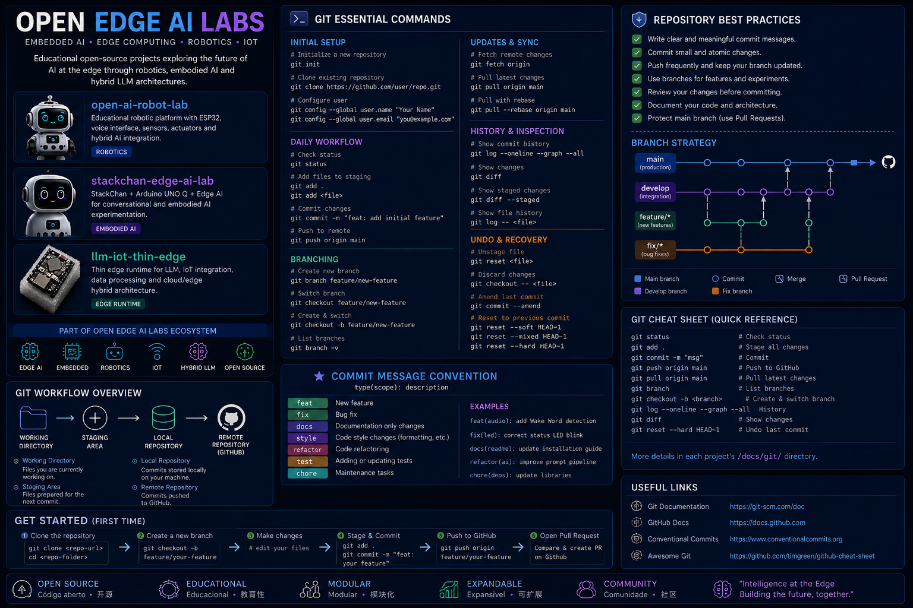

Educational Open-Source Ecosystem for: Embedded AI • Edge Computing • Hybrid LLM Architectures • Robotics • Intelligent IoT Systems
Research and development of intelligent embedded systems using ESP32, STM32 and constrained edge devices.
Cloud + Local AI systems combining OpenAI, Ollama, Qwen and distributed runtime architectures.
Educational robotics focused on voice interaction, embodied AI and hybrid intelligence systems.
Runtime architectures and intelligent orchestration for IoT and distributed systems.
Educational AI robotics platform using ESP32-S3, voice interfaces, hybrid LLM architectures and 3D printable robotics.
View Repository →Experiments with embodied AI, conversational robotics and hybrid intelligence using the StackChan ecosystem.
View Repository →Hybrid Edge AI infrastructure for intelligent IoT devices, runtime orchestration and distributed AI systems.
View Repository →Devices → Edge Runtime → Hybrid LLM → Conversational Robotics → Autonomous Systems
The ecosystem explores modern distributed AI architectures combining embedded systems, local inference, cloud intelligence and intelligent robotics.
ESP32 • STM32 • M5Stack • Edge Devices
OpenAI • Ollama • Qwen • Hybrid AI
MQTT • WebSocket • REST • Streaming APIs
Python • FastAPI • ESP-IDF • PlatformIO